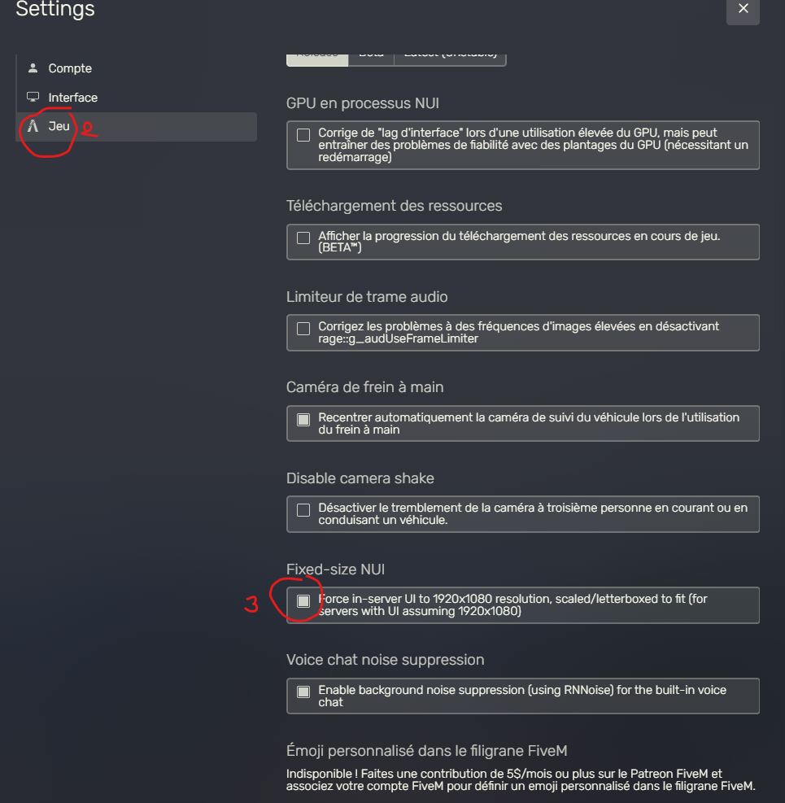

Questions fréquentes
- Tout d'abord, nous avons notre Free-Access pour pouvoir vous familiarisez avec l'univers de Fraternity.
- ETAPE 1: Installez GTA V, Steam, TeamSpeak et FiveM
- ETAPE 2: Accédez au Discord Officiel de FRaternity et apprenez le Règlement FA.
- ETAPE 3: Accédez aux channels FA du serveur.
- Une fois familiariser avec la ville de Fraternity, ou bien vous-avez de l'expérience dans d'anciens serveurs Whitelist ?
- ETAPE 1: Installez GTA V, Steam, TeamSpeak et FiveM
- ETAPE 2: Accédez au Discord Officiel de FRaternity et apprenez le réglement WL.
- ETAPE 3: Préparez le Background de votre personnage, et passez votre entretien vocal.
- ETAPE 4: Si vous êtes acceptés, accédez aux channels WL du serveur, et démarrez votre aventure.
- Si en vous connectant vous avez ce message :
- Vérifier que vous avez le bon rôle selon le serveur (WL ou FA) dans FRaternity-RP
- Vérifier que votre discord soit bien lié à fivem
- Aller dans paramètres utilisateur sur discord :
- Ensuite Application autorisées
- Vérifier si Fivem est autorisé
- Deux solutions possibles :
- Fivem est bien présent :
- Retirer l'autorisation puis allumer fivem, une requête d'autorisation s'ouvrira sur discord et accepter la. Réessayez de vous connecter.
- Fivem n'est pas présent :
- Allumer fivem, une requête d'autorisation s'ouvrira sur discord et accepter la. Réessayez de vous connecter.
- Fivem est bien présent :
- Si malgré ça vous avez encore des problèmes, n'hésitez pas à venir en BDA
- Vérifiez que vous avez bien Whitelist votre IP sur : https://fraternity.syswall.fr/ (peu importe que vous soyez FA ou WL)
- Vérifiez d'avoir bien lancé Steam avant d'ouvrir FiveM (sinon il ne prendra pas votre steam en compte, et donc votre connexion sera impossible)
- Si vous avez tenté de rentrer l'adresse sur la console F8, faites une recherche dans les serveurs FiveM directement ("Jouer").
- Fraternity V3 RP pour le WL
- Fraternity RP FA pour le FreeAccess
- Vérifiez, si vous tentez de venir sur le WL que vous avez bien passé votre entretien et que vous avez obtenu le rôle correspondant aux citoyens WL.
- Sinon, venez en BDA.
- Tu as des problèmes de touche, tes touches ne sont pas au bon endroit. C'est un conflit qui peux survenir en allant sur d'autres serveurs et cela rentre en conflit.
- Rend doit dans ta barre de recherche Windows et écrit %appdata%.
- Ensuite trouve le fichier CitizenFX et ouvre le.

- Ouvre le fichier fivem.cfg
- Maintenant sélectionne toutes les lignes qui commence par rbind
- Effacer les, sauvegarde et relance fivem.
- Ensuite trouve le fichier CitizenFX et ouvre le.
- Cette action vise a effacer toutes les sauvegardes de touches de tout les serveurs pour les remettres d'origine.
- Souvent, vous vous retrouvez face à quelques problèmes de mappings, de conflits entre serveurs que vous avez pu visiter, etc...
- La solution se trouve souvent être celle-ci : Videz vos caches.
- Pour se faire :
- Clic droit sur l'icone de votre application FiveM ▶️ Ouvrir l'emplacement du fichier (Si vous ne trouvez que ces 2 raccourcis, refaites un clic droit sur le raccourci FiveM et de nouveau Ouvrir l'emplacement du fichier)
- Ouvrez FiveM Application Data
- Ouvrez le fichier data

- Effacez TOUS les dossiers dans data , puis relancez FiveM
Oui, même game-storage, certains scripts affectent votre jeu d'origine, donc il faut supprimer ce dossier aussi.
- Relancez FiveM et TADA, vous avez des caches tout neufs !
- La solution se trouve souvent être celle-ci : Videz vos caches.
- Tu as des ralentissements dans la navigation de ton inventaire ?
- Rends toi sur la page d'accueil FiveM puis :
- Rends toi dans tes réglages
- Dans l'onglet Jeu
- Coche la case de Fixed-size NUI
- Certains packs graphiques peuvent en être la cause, mais si tu n'as pas de ralentissement autre que dans le menu inventaire / tab, la solution plus haut est normalement la bonne ! 